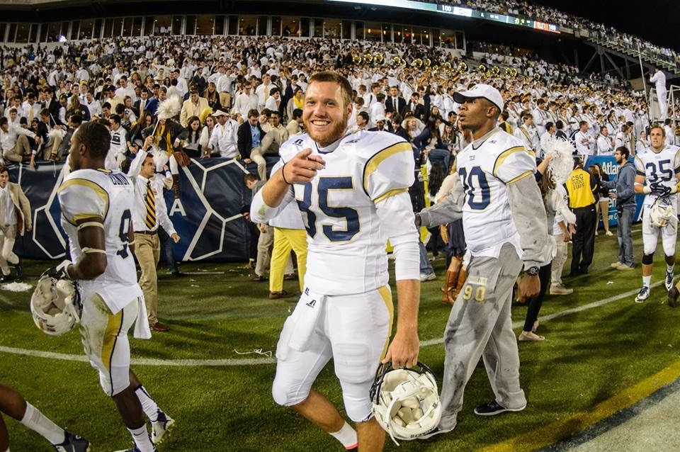

About Me
Hi, my name is Ryan and this is a little bit about me... I am originally from Florida but currently reside in Georgia. I am a 5th year senior at the Georgia Institute of Technology, where I am majoring in Industrial Engineering. I am just a short time away from graduating with my BS in ISyE this coming May (2017)! During my time here at Georgia Tech I was lucky enough to be the punter for the Yellow Jacket's football team. Mostly remembered for my fake punt against Miami, where I was BODY SLAMMED on national television. I still got the first down!
I have throughly enjoyed my time here at Georgia Tech. Going out on top my senior year with having the season opener in Dublin, Ireland, getting a HUGE win over U(sic)GA, and being a Taxslayer Bowl Champion! I am taking this Bootcamp because I have a passion for Technology and love how it has the ability to improve the lives of the people who utilize it! I am looking forward to what is ahead!